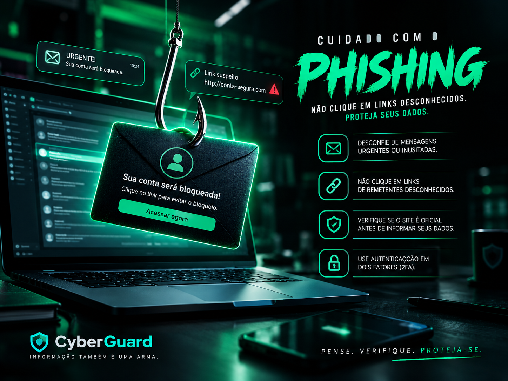
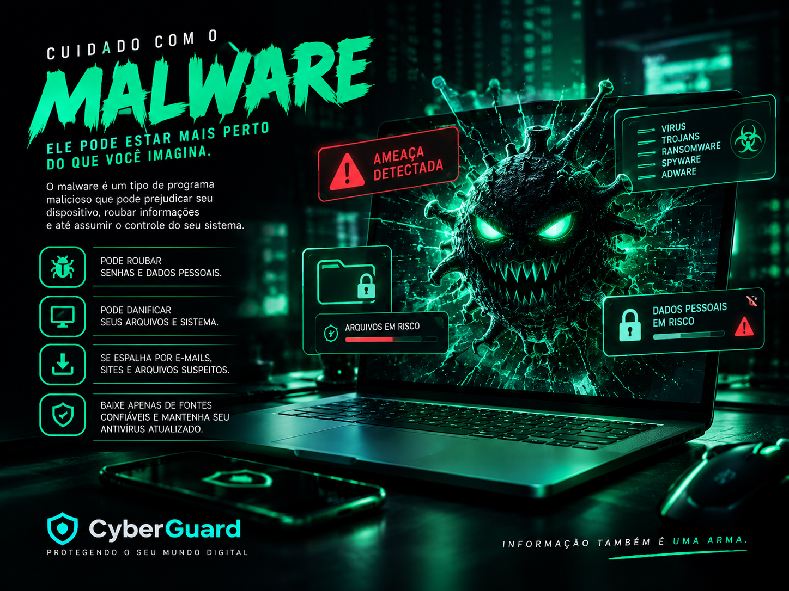

Proteção
Senhas seguras
Crie senhas longas e exclusivas para cada conta. Use um gerenciador de senhas e ative a autenticação em dois fatores sempre que possível.
Conheça ameaças digitais e descubra como proteger suas informações.
Crie senhas longas e exclusivas para cada conta. Use um gerenciador de senhas e ative a autenticação em dois fatores sempre que possível.

É uma tentativa de enganar pessoas para roubar senhas ou dados. Desconfie de mensagens urgentes, remetentes estranhos e links suspeitos.

É um tipo de programa malicioso que pode prejudicar dispositivos ou roubar informações. Baixe arquivos somente de fontes confiáveis.
Compartilhe apenas o necessário. Revise as permissões dos aplicativos e evite publicar informações pessoais em excesso.
Adicione uma segunda etapa de verificação às suas contas. Assim, uma senha roubada fica menos suficiente para permitir o acesso.
Prefira redes confiáveis, mantenha seus dispositivos atualizados e evite acessar informações sensíveis em redes públicas sem proteção.